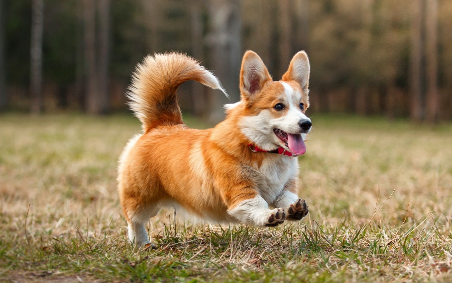

Pembroke Welsh Corgi
The Pembroke Welsh Corgi is a cattle herding dog breed that originated in Pembrokeshire, Wales. It is one of two breeds known as a Welsh Corgi. Pembroke Welsh Corgis descended from the Spitz family of dogs. The other is the Cardigan Welsh Corgi, which descend from the Teckel family of dogs, which also produced the Dachshund.
Samoyed

The Samoyed is a breed of medium-sized herding dogs with thick, white, double-layer coats. They are a spitz-type dog which takes its name from the Samoyedic peoples of Siberia.
Rottweiler

The Rottweiler is a breed of domestic dog, regarded as medium-to-large or large.The dogs were known in German as Rottweiler Metzgerhund, meaning Rottweil butchers' dogs, because their main use was to herd livestock and pull carts laden with butchered meat to market. This continued until the mid-19th century when railways replaced droving. Although still used to herd stock in many parts of the world, Rottweilers are now also used as search and rescue dogs, guard dogs, and police dogs.